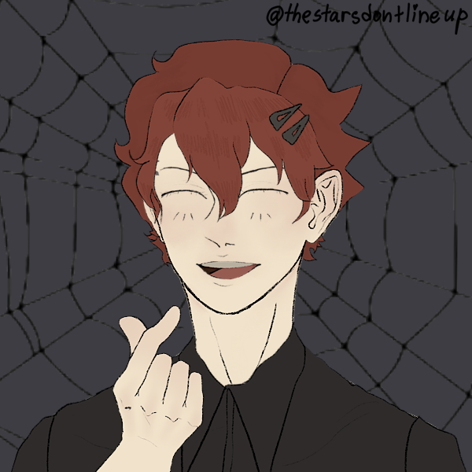

Name: Peter
Age: Ancient(16)
Pronouns: Any. Get creative.
Picrew Used
Artist that made the picrew
I am a vampire, because either life's too short not to be a vampire, or I'm immortal, so I'm a vampire.
In addition to being a caffeine addicted creature of the night, I'm also a musician and I release music sometimes. I'm also a j-fashion enthusiast(code for I can't decide between lolita and gyaru). And of course, I dabble around with witchcraft. There's a very long list of things that I do, because basically I mess around with a lot of stuff. Chances are, if it's a hobby, I've probably tried it.
Anyways, that's me. Feel free to poke around the site as much as you'd like...
This is my website. It used to be quite different, but I have the inability to stick to one aesthetic. It was previously known as Peter Pan's Bedroom, however now it is called
🖤 Your Friendly Neighborhood Vampire 🖤,
and yes, the black heart emojis are part of the title so please don't exclude them.
As it was with the previous iteration of the site, it will still contain a blog and my music, which you can peruse at your own free will, but I'll also hopefully be uploading some ocs and art(?) in the near future. I might also add some sort of progress tracker for stuff I'm doing but idk. I'd also like to add some shrines for the various pieces of media that have not lessened their grasp upon my psyche.
While I would like to add some sort of chat feature eventually, it does not exist on this current version of the site, so if you'd like to contact me, please message me on tumblr at @frankisnotademon.
I have a friend on tumblr who is working on his own site, so once they get it up, I'll link it here so you can check it out!